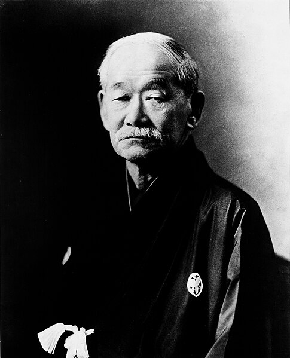

柔道
Judo is a modern martial art, combat, and Olympic sport created in Japan. It was developed in 1882 by Jigoro Kano, who adapted traditional Japanese jujutsu techniques into a more systematized form of self-defense, training, and competition.
Judo focuses on throws, pins, joint locks, and strangles, with an emphasis on using an opponent’s energy and balance against them. The term "Judo" translates to "the gentle way," symbolizing the philosophy of yielding and applying techniques with maximum efficiency with minimal effort.
Judo made its Olympic debut at the 1964 Summer Olympics in Tokyo, and today it is practiced by millions of people worldwide, from beginners to Olympic champions.